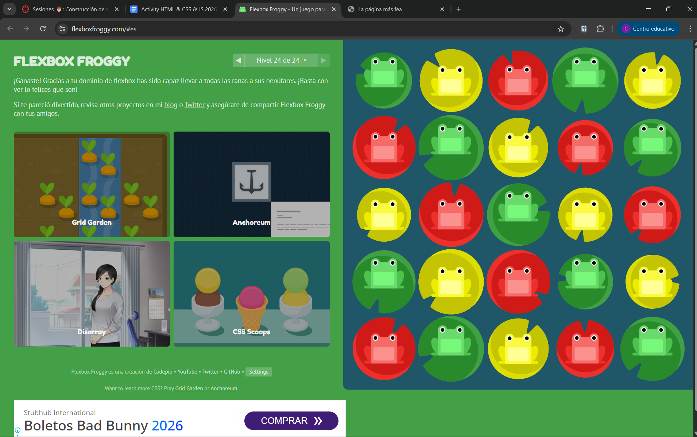
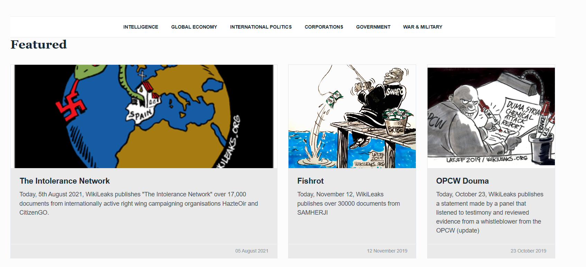

Contesta en un html haciendo la página más fea posible
Use your own words for the answers. Explain to someone that it’s not an engineer (or student).
Write your references in each one of your answers.
English o Español o un mix.
If you already know how to do something don't do it, you just have to write: “Done”
Contesta en un html con css (hazla lo más fea que puedas, nada más que se pueda leer)
1.-HTML
Introduccion
¿que es html?
hypertext markup language o por sus siglas HTML, es un lenguaje de etiquetas usado para generar
la estructura de una página web, un dato clave, no es un lenguaje de programación al no contener lógica, solo etiqueta y muestra
el contenido en una página web dependiendo de como sea marcado.
¿que son las etiquetas head y body?
la etiqueta head es la parte de una página web que contiene información
como su titulo, enlaces a hojas de estilo y de dinamiso (Js y Css), la etiqueta boody contiene todo el contenido que será mostrado al
usuario, como texto, imagenes, hipervinculos, etc.
2.-CSS
Introduccion
¿que es css?
CSS o cascading style sheets, es un lenguaje de hojas de estilo usado para dar formato a una página web.
¿cual es el proposito de css?
su principal proposito es dar formato o vista a una pagian web manteniendola separada
de su estructura, lo que ayuda a tener el código mas organizado
¿como se aplica css a un documento html?
css se aplica a un documento html de varias maneras, la más común es
usando la etiqueta "link" en el head del documento html para enlazar con un archivo css externo, también se puede usar la etiqueta
"style" dentro del head para escribir el código css directamente en el documento html y otra forma de hacerlo es usando atributos de
estilo directamente en los elementos HTML.
¿que es un selector en css?
Un selector es una parte del codigo css que se encarga de seleccionar los elementos html a los que se
les aplicará un estilo específico, esto mediante el uso de ids, clases o etiqutas.
imagen de fluke32

Basic CSS
Explica los selectores:
- Tag: Aplica estilos a todos los elementos de un mismo tipo, por ejemplo a todos los parrafos
- Class: Aplica estilo a los elementos que pertenecen a una clase específica, se pone un punto antes del nombre de la clase
- Id: Id es un atributo irrepetible, inicia con un numeral y aplica estilo a un elemento específico
- Tag y Class: Combina ambos selectores para aplicar estilos a elementos de un tipo específico que también pertenecen a una
clase determinada
¿qué es una clase? ¿qué es un id? ¿como se relacionan con css?
Una clase es un atributo o capsula para que css sepa a que aplicar un
estilo, el id hace lo mismo, pero tienen una diferencia clave, la clase puede ser usada en varios elementos, pero el id es único
¿que es el box model?
todo son cajas en web y en esto se basa este modelo, en darle 4 atributos a cada elemento, el width y height que
definen sus dimensiones, el padding que es el espacio entre el contenido y el borde, el border que es el borde de la caja y el margin que
es el espacio entre la caja y otros elementos
ejemplo:
.caja{
width: 200px;
height: 100px;
padding: 10px;
border: 2px solid black;
margin: 20px;
}
Layout
Explica el grid
Grid es un sistema que ayuda a diseñar un layout bidimensional, permite organizar contenido en filas y
columnas
Explica el flexbox
Flexbox es un sistema de diseño unidimensional, se enfoca en organizar elementos en una sola dirección
ya sea horizontal o vertical
imagen de frog

Clone wikileaks
imagen del uso en la copia de wikileaks
